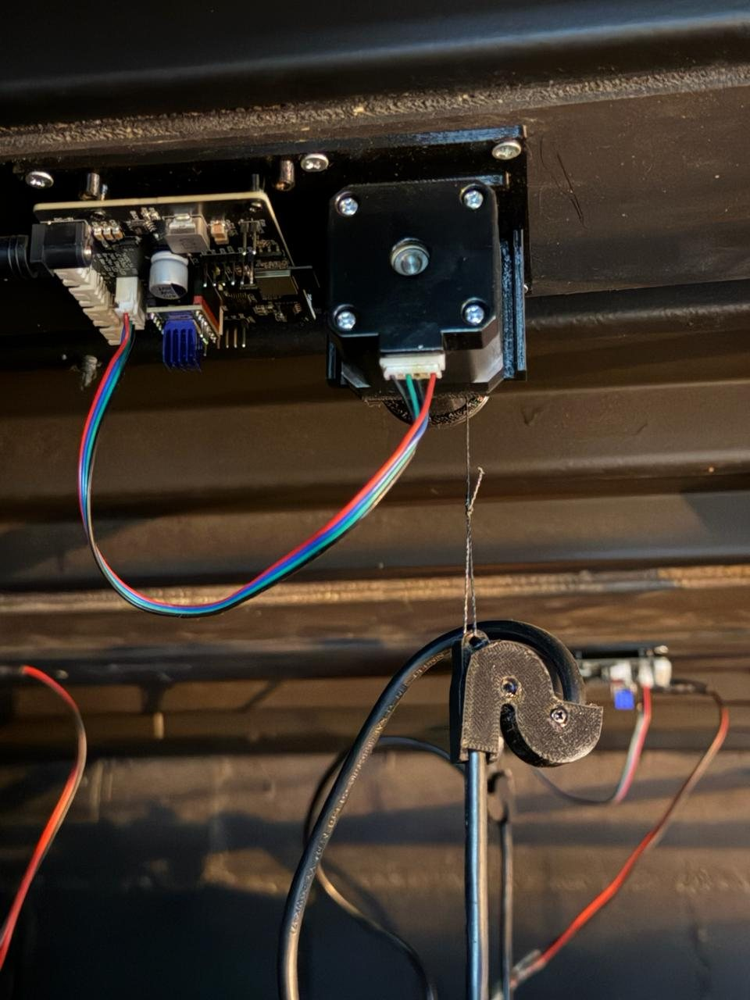
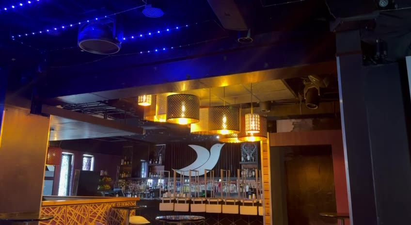

Twelve chandeliers on winches
Twelve RavLight winch controllers raise and lower the chandeliers over a bar, each one on its own stepper motor.
Out of sight above the ceiling
Each chandelier hangs from a thin line wound on a small drum. The board and the motor sit above the ceiling. Only the line moves.
The LED Lifter v5 board carries an ESP32, Ethernet and a TMC2209 stepper driver. RavLight Orion is its firmware.
The show runs from MadMapper, which moves all twelve chandeliers over the network.

No limit switch
The driver senses the motor load and stops at the top of travel. No switch and no cable on the moving part.
A setup wizard measures the motor at eight speeds in both directions, so every winch knows its own load.

Still unless told to move
- An Enable channel at 0 keeps the motor off
- When DMX stops, a watchdog notices within 5 seconds
- Travel limits clamp any position outside them
- Position in centimetres or inches, set from the drum size

Their board, our firmware
George Qualley and his brother designed the LED Lifter board at Q-Squared Systems and needed firmware for it. RavLight became that firmware, refined on the bench and in the venue.
The same collaboration produced the Home Assistant integration for RavLight devices.